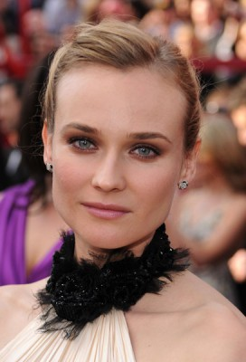
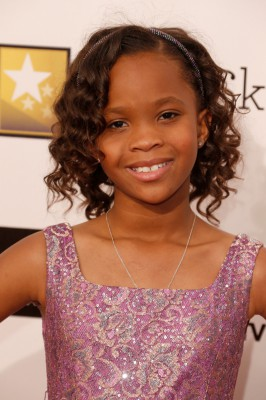
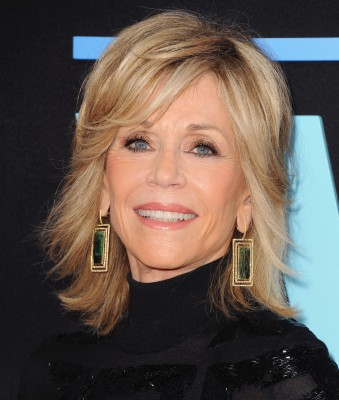
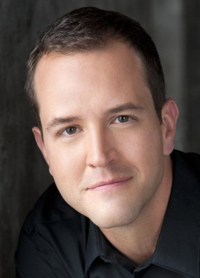
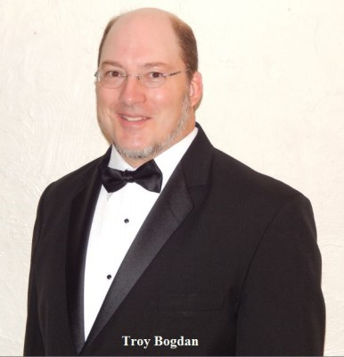
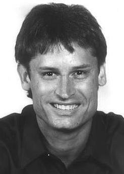
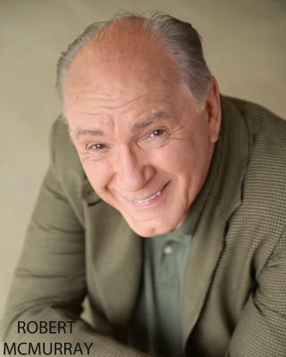

#4626 Väter und Töchter
Alternativ: Väter und Töchter - Ein ganzes Leben (Englischer Titel)

 IMDB-Wertung: 7.1 / 10
IMDB-Wertung: 7.1 / 10  Metascore: 0
Metascore: 0 
Die kleine Katie (Kylie Rogers) sitzt auf dem Rücksitz, als ihr Vater Jake (Russell Crowe) sich mit seiner Frau streitet – und einen Unfall baut. Vater und Tochter überleben, die Mutter nicht. Jake, ein mit dem Pulitzerpreis ausgezeichneter Autor, trägt eine Kopfverletzung davon und hat deswegen immer wieder schmerzhafte Krämpfe. Als er depressiv wird und in eine Klinik geht, kommt Katie in die Obhut ihrer Tante Elizabeth (Diane Kruger) und ihres Onkels William (Bruce Greenwood), die sie aber alles andere als fürsorglich behandeln. Sie wollen Katie adoptieren – was Davis unter allen Umständen verhindern will und weswegen er sich mehr denn je anstrengt, seiner geliebten Tochter ein gutes Leben zu finanzieren. 25 Jahre später ist Katie (nun: Amanda Seyfried) eine Sozialarbeiterin unter Chefin Dr. Corman (Octavia Spencer), die mit Typen auf Bartoiletten Sex und ein Problem mit Bindungen hat. Ob der angehende Autor Cameron (Aaron Paul), den Katie kennenlernt, daran etwas ändern wird?
Jahr: 2015
Dauer: 116 Minuten
FSK: 12
Land: Italien Studio: Spot On DistributionTonspuren: DTS - ,
Untertitel: Deutsch,
Auflösung: 1080p (1920x800) Größe: 6174 MB
Genre: Drama
Regisseur: Gabriele Muccino
Drehbuch: Karl Markovics
Soundtrack:
Darsteller:
 Russell Crowe als Jake Davis
Russell Crowe als Jake Davis Amanda Seyfried als Katie Davis
Amanda Seyfried als Katie Davis- Aaron Paul als Cameron
-  Diane Kruger als Elizabeth
-  Quvenzhané Wallis als Lucy
 Bruce Greenwood als William
Bruce Greenwood als William Janet McTeer als Carolyn
Janet McTeer als Carolyn- Kylie Rogers als Young Katie
-  Jane Fonda als Teddy Stanton
 Octavia Spencer als Dr. Corman
Octavia Spencer als Dr. Corman- Brendan Griffin als Evan
 Ryan Eggold als John
Ryan Eggold als John- Chris Douglass als Brian
- Jason McCune als Wilton
- Paula Marshall als Laura Garner
- Charles David Richards als Doctor
- Kasey Daley als Nurse
- Santiago Veizaga als Diego
- Claire Chapelli als Nancy
- Jimmy Nicholas als Man from Bar
-  Nathan Hollabaugh als Subpoena Server
- Sam Turich als Aaron
- Jesse Dillon Sorrells als Singing Waiter 2
- Brian Muller als Singing Waiter 3
- Michelle Veintimilla als Woman at Cameron's Apartment
- Frank Conforti als Cab Driver
- Kaza Marie Ayersman als Bookstore Patron , uncredited
-  Troy Bogdan als Bar Patron , uncredited
- Deborah Charity als Bank Employee , uncredited
- Lloyd Crago als Pulitzer Colleague , uncredited
- Amy Lyn Elliott als Pulitzer Colleague , uncredited
- Mark Falvo als Museum Patron , uncredited
- Andre Faulcon als Bank Teller , uncredited
- Lucky Harmon als NY Pedestrian , uncredited
-  William Kania als Orderly , uncredited
- David Dale McCue als NYPD Officer in Diner , uncredited
- Tiffany Sander McKenzie als Pregnant Woman at Bus Stop , uncredited
-  F. Robert McMurray als Funeral Mourner , uncredited
- Phil Nardozzi als Pedestrian , uncredited
- Samantha Reichert als Foster Child , uncredited
- Chris A. Riskus als Bookstore patron , uncredited
- Al Sotto als Pulizter Attendee , uncredited
- Mike Walker als Pulitzer colleague, Mike , uncredited
- Jenny Vos als Tricia
- Jake Scheib als Andrew
- Matt Scheib als Michael
- John Shepard als McNally
- Darren Eliker als Dr. Barrett
- Demetria Marsh als Woman at Public School
- Buster Maxwell als Bookstore Manager
Datei: X:\2015(N-Z)\Väter und Töchter (2015, FSK12, 1920x800).mkv seit 25.10.2016
Festplatte: HD 2015(A-Z)
 Es gibt insgesamt 161 Filme in der Gruppe '2015(N-Z)'
Es gibt insgesamt 161 Filme in der Gruppe '2015(N-Z)'